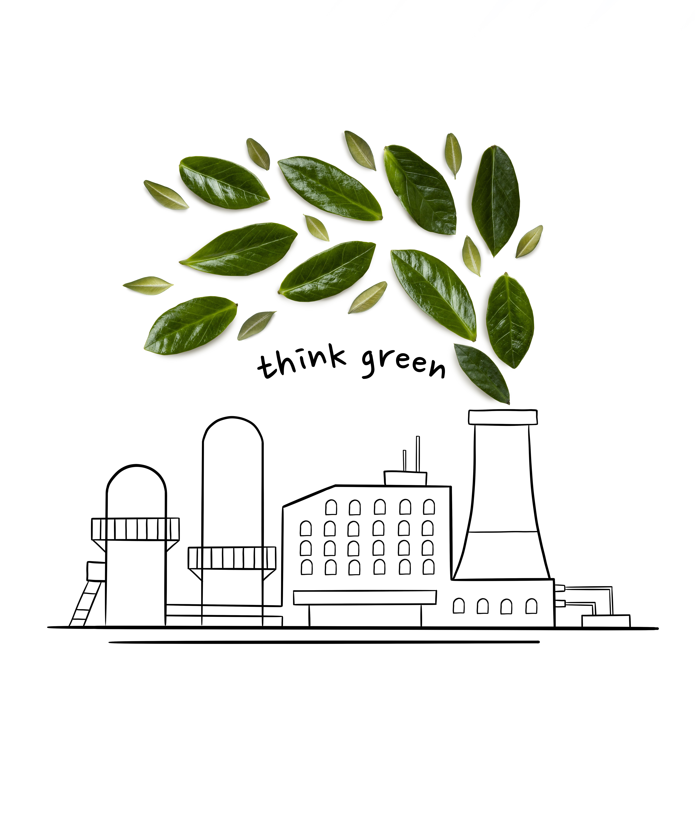

Sostenibilidad en Informática y Comunicaciones
Sostenibilidad
Índice
Bibliografía
Contenido

Capitulo 7: Producción sostenible en la industria tecnológica
7.1 Procesos de fabricación responsables en hardware
7.2 Cadena de suministro ética (minerales, ensamblado, reciclaje)
7.3 Etiquetas ecológicas y estándares de sostenibilidad en productos tecnológicos
Capitulo 8: Normativa ambiental aplicable a nuestro sector productivo
8.1 Principales leyes ambientales aplicables
8.2 Normativas europeas de diseño ecológico y eficiencia energética
Capítulo 9: Plan de sostenibilidad en nuestro sector productivo
9.1 Definición de plan de sostenibilidad
9.2 Ejemplos reales de planes de sostenibilidad de empresas disponibles en abierto